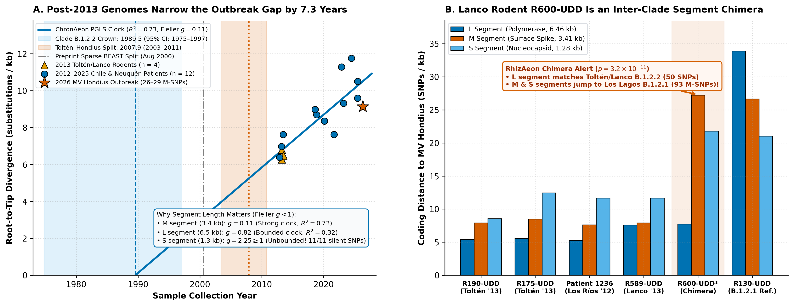
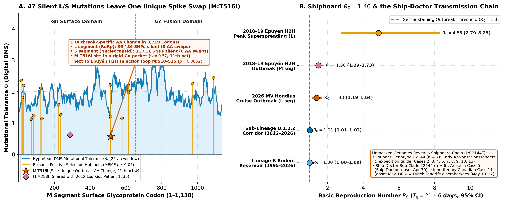

One Spike Mutation, a Chimeric Rodent, and the Ship Doctor's Sub-Clade
Re-analyzing the 2026 MV Hondius Andes virus cruise-ship outbreak (Ulloa-Zepeda et al.) across all 270 Pathoplexus sequences with ChronAeon, RhizAeon, and HyphAeon.
Doubling Clade B.1.2.2 with 2012–2025 Chilean & Argentine human genomes narrows the Toltén–Hondius split from Aug 2000 to ~2007.9 in 0.57 s.
RhizAeon proves R600-UDD carries a B.1.2.2 L segment (50 SNPs) but Los Lagos B.1.2.1 M & S segments (93 M-SNPs). MV Hondius is pure B.1.2.2.
100% of L (36/36) and S (11/11) coding SNPs vs. Toltén rodents are silent. M:T516I sits in a rigid Gn pocket (Φ = 0.57, 11th pct) next to the Epuyén H2H loop.
ChronAeon Dynamics separates spillover (R0 = 1.00) from shipboard spread (R0 = 1.40), while L:C2144T links Case 5 (Ship Doctor) to 5 mid-May passengers.
M:T516I) and a single shipboard marker (L:C2144T) tell the entire evolutionary story.
Filling the 13-Year Gap & Unmasking a Chimeric Rodent
- Post-May 2026 Genomes Double Clade
B.1.2.2: Linking 13 split Chilean human genomes (2012–2025) and 2024–2025 Neuquén, Argentina strains places 2012 Los RíosPatient 1236just 26 M-SNPs from MV Hondius. - 7.3-Year Narrower Split: In 0.57 s, tree-free
chronaeon datecalibrates the M clock (R² = 0.73, Fieller g = 0.11), dating theB.1.2.2crown to 1989.5 and the Toltén–Hondius split to ~2007.9 (2003.4–2010.8). - Why the S Clock Failed: Fieller's theorem proves the short 1.3 kb S segment is unidentifiable within
B.1.2.2(g = 2.25 ≥ 1; 11/11 silent SNPs). - Lanco Rodent
R600-UDDIs a Chimera:rhizaeon(11.9 s) provesR600-UDDswapped its M and S segments into the Los LagosB.1.2.1clade (p = 3.2 × 10⁻¹¹).

chronaeon phylogeo detects strong bidirectional dispersal between La Araucanía / Los Ríos (Chile) and Neuquén (Argentina) (Bayes Factor = 89–248), defining a trans-Andean reservoir corridor.
47 Silent L/S Mutations Leave One Unique Spike Swap (M:T516I)
- 100% Silent Internal Machinery: Between Toltén rodents and MV Hondius, 36/36 L-segment SNPs (polymerase) and 11/11 S-segment SNPs (nucleocapsid) are synonymous (0 amino-acid changes).
- Sole Unique Substitution Across 3,719 Codons: On the M glycoprotein,
M:M288Iis shared with 2012 Patient1236, leavingM:T516Ias the only unique amino-acid change on the outbreak branch. - Rigid Gn Pocket Next to an H2H Loop: In
hyphaeon dms,M:516sits at the 11th percentile of mutational tolerance (Φ = 0.571) right next to loopM:510–515(M:513p = 0.0052 in the 2018–19 Epuyén human-to-human outbreak). - #1 Phylogenetic Trait Hit:
M:516ranks #1 across the M segment inhyphaeon phenotype(ρ = 0.748, FDR q = 4.76 × 10⁻¹³).

M:T516I directly.
Shipboard R0 = 1.40 & the Ship Doctor's Sub-Clade (L:C2144T)
Across 30 years of Lineage B surveillance (and B.1.2.2 at R0 = 1.013), human cases reflect self-limiting spillovers at the critical threshold.
Using the 21-day ANDV serial interval, chronaeon dynamics confirms supercritical human-to-human transmission aboard the vessel (doubling time 42.9 days).
All early April-onset cases (Cases 2, 3, 4, 6, 7, 8, 9, 10, 13; onset Apr 1–27) carry the ancestral cytosine C2144 on the L segment.
Synonymous mutation L:C2144T (P703P) arose in Case 5 (Ship Doctor, onset Apr 30) and was inherited by Canadian Case 11 (May 14) and 4 Dutch Tenerife cases (May 18–22).